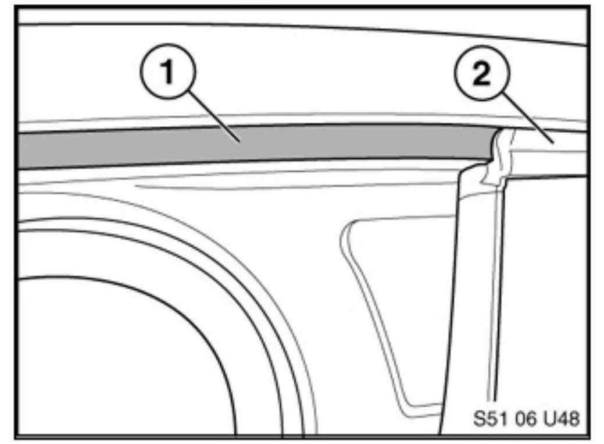

Body - Squeak/Creak From Door Frame Areas
SI B 51 28 05Body Equipment
January 2008
Technical Service
This Service Information bulletin supersedes SI B51 28 05 dated February 2007.
[NEW] designates changes to this revision
SUBJECT:
Window Guide Noise
MODEL:
E83 (X3)
SITUATION
Some customers may complain of hearing squeaking or creaking noises coming from the door frame area when driving on rough roads.
CAUSE
Movement between the flocking material (felt-like material indicated by the arrows) on the window guide and the surrounding roof panel may produce squeaking or creaking noises.
These noises may be amplified by contamination or cleaner residue on the door opening.
CORRECTION
In the case of a customer complaint, refer to the procedure outlined below to replace the seals with improved parts and/or apply the specified transparent Teflon tape.
The flocking material was changed from Poly Amid (PA) to Poly Ethylene Terephthalate (PET) in June 2005. PET is a thermoplastic polyester with a semi-crystalline structure that has exceptional rigidity, strength, dimensional stability and low moisture absorption.
The new and improved parts may not have any unique identifying stamps; therefore the production date should be used to identify the new guides.
Updated guides will have a date stamp on the back of the part reading later than June 6, 2005 (13.6.2005).
PROCEDURE
Depending on the status of the vehicle, perform the applicable procedure described below.
A. Vehicles produced up to 01/2005 - first complaint:
^ Replace all 4 upper door seals with the improved parts.
^ Follow Repair Instruction RA 51 32 211 to replace the front window guides.
^ Follow Repair Instruction RA 51 34 211 to replace the rear window guides.
^ Thoroughly clean the upper door seal's mating surface on the body of the vehicle with a silicone remover, such as 3M General Purpose Adhesive Cleaner or Wurth Silicone Remover.
^ Do not apply "Carbaflo" on these door seals.
B. Vehicles produced from 01/2005 and vehicles that have previously had the improved seals installed:
^ Thoroughly clean the upper door seal's flocking material, as well as the mating surface on the body of the vehicle with a silicone remover such as 3M General Purpose Adhesive Cleaner or Wurth Silicone Remover.
^ Apply a continuous length of Teflon tape (PN 9 407 798) to the entire contact area on the body of the vehicle, from the middle of the A-pillar to the top of the C-pillar.

Notes:
The tape should be applied slowly and very carefully to avoid trapping air bubbles under the tape.
To eliminate visibility of the tape when the door is closed and ensure proper contact with the flocking surface, the upper edge of the tape (1) should line up evenly with the top of the door seal (2) for the entire length of the applied area. The tape should be applied in its full width (16 mm) and not be cut down to a narrower width.
C. Vehicles produced up to 01/2005 which are in for a repeat complaint and still have the original seals installed:
^ Replace all 4 upper door seals as per procedure A.
^ Apply Teflon tape as per procedure B.

PARTS INFORMATION
[NEW] WARRANTY INFORMATION

Disclaimer